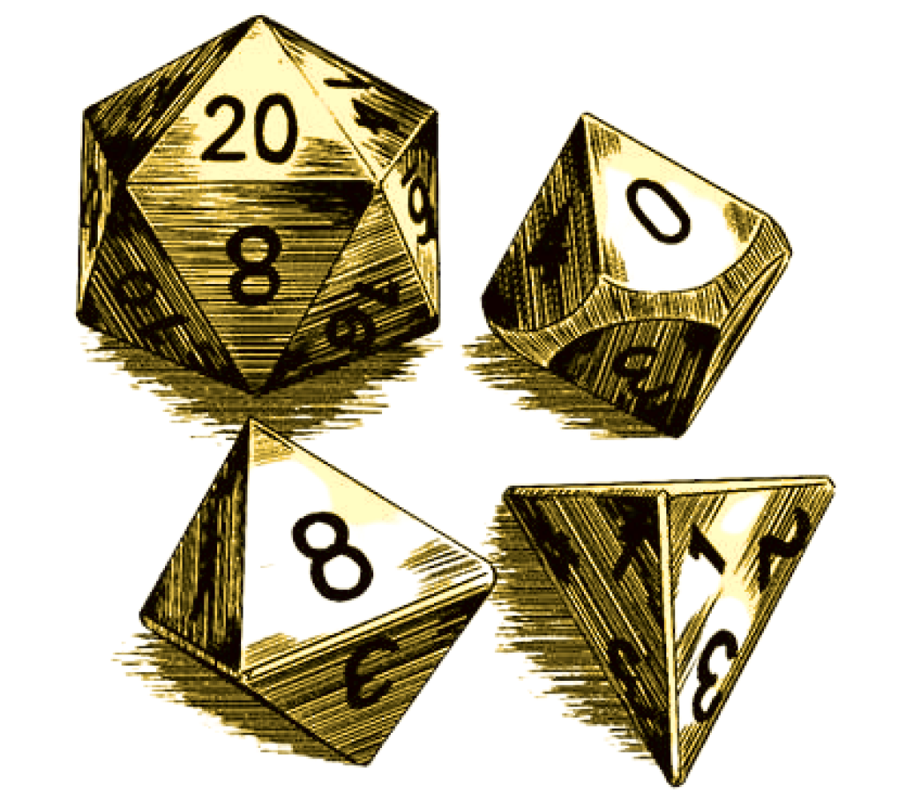
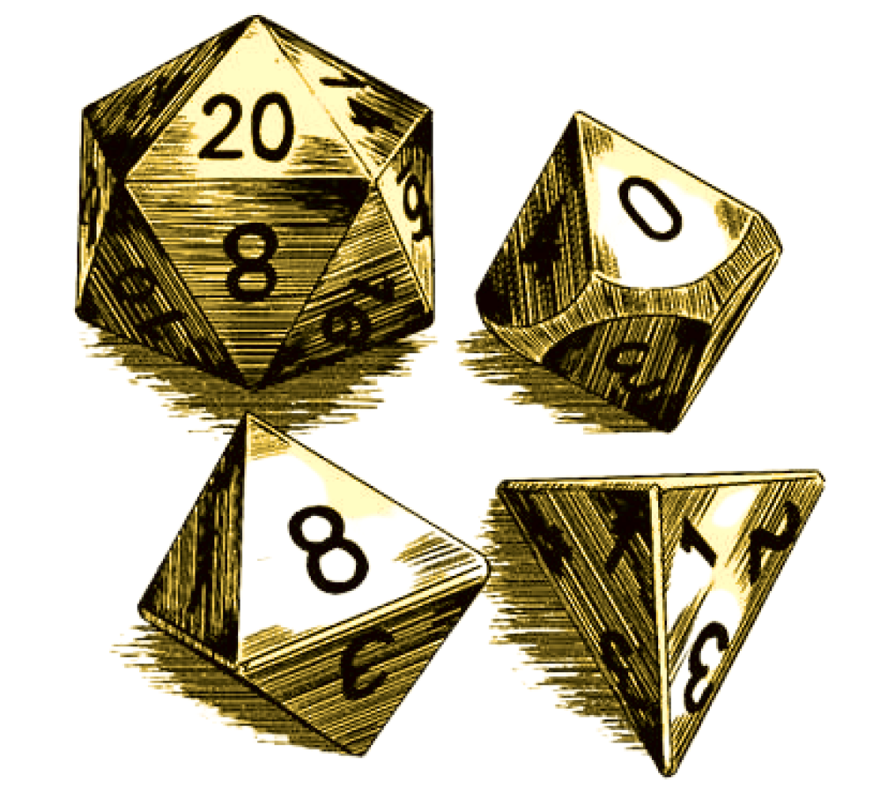
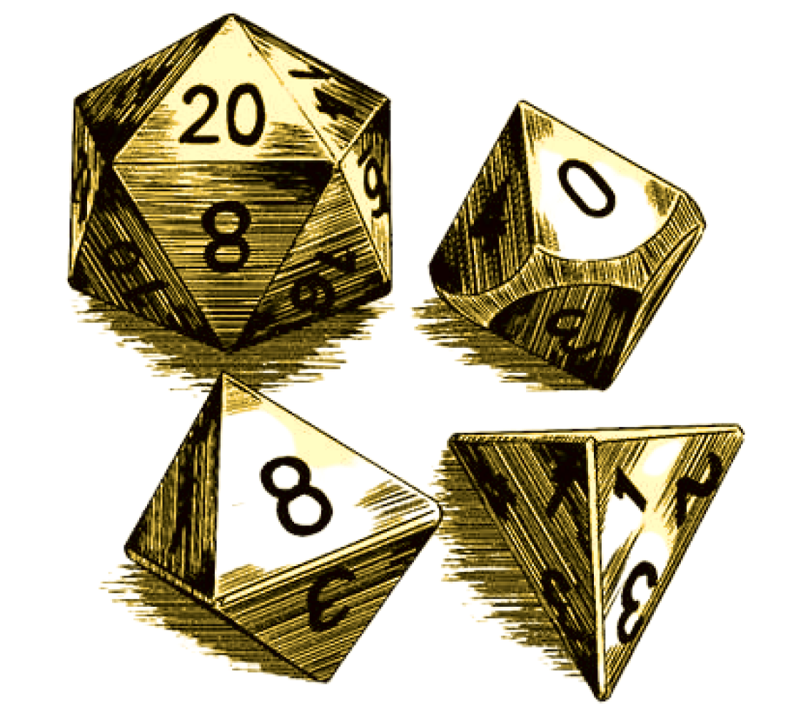
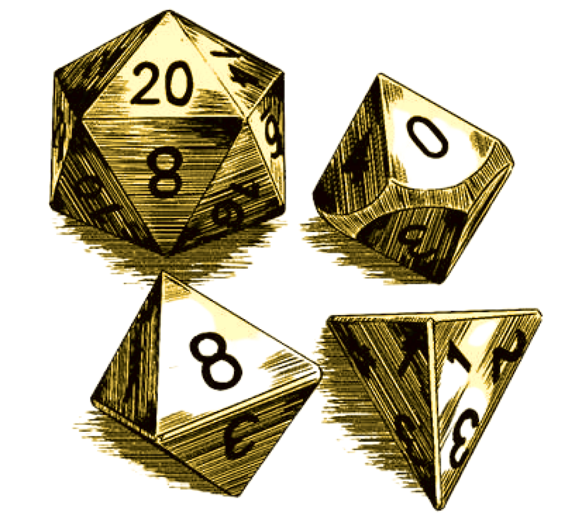

 

Les vies de la sainte-cécile

Langue originale: Français.
Auto-publication, 2018, après un contrat de sept mois durant lequel j’ai travaillé pour une association locale. Tous droits réservés.
Recherches, rédaction, correction, édition, et couverture réalisés par moi-même.
Prologue ci-dessous !
Notre histoire commence en 1945, à la création officielle de l’association. Mais avant cela, il est sûrement important de replacer un peu le contexte, et de parler de la Fédération Sportive Française et Culturelle de France, la FSCF. Cet organisme à l’initiative de Paul Michaux est une volonté de réunir les diverses sections sportives existantes, d’abord à Paris puis dans toute la France. Créé en 1898, il y a eu plusieurs noms: Union des sociétés de gymnastiques et d’instruction militaire des patronages et oeuvres de jeunesse de France de 1898 à 1901, puis Fédération des sociétés catholiques de gymnastique de 1901 à 1903, puis Fédération gymnastique et sportive des patronnages de France jusqu’en 1939. Il est à noter qu’à ce moment-là, tout était encore très lié à la religion catholique. Il n’y avait donc pas de filles dans les rangs. Celles-ci avaient leur propre organisation, créée en 1919 qui était appelée le Rayon sportif féminin. Les deux organismes ont été contraints de se rassembler pendant l’occupation sous le régime de Vichy sous le nom de: Union gymnique et sportive des patronnages de France.
C’est sous cette effigie qu’apparaît la Sainte-Cécile en 1945, sous l’impulsion de Mademoiselle Lydie Ries et de Monsieur Félicien Mizier, à Longeville-en-Barrois, un petit village meusien. Comme beaucoup d’associations sous la bannière de l’UGSPF, la Sainte-Cécile descend d’un pattronage, qui n’était pas nommé ainsi. Les villageois l’appelaient juste “le cercle”. Les enfants venaient y parler de foi avec l’abbé Bauchet, curé de la paroisse. Les garçons pouvaient aussi se voir proposer des camps scouts. Le nom “patronnage” vient du fait que ces rassemblements étaient placés sous la protection d’un saint patron. Alors, est-ce de là que vient le nom de l’association ?
Pas vraiment. Il faut remonter à quelques années pour en trouver l’origine à Paris. Monsieur Mizier avait à l’époque, une association de musique à la capitale qui portait le nom de Sainte-Cécile, et qui avait cessé son activité. Lorsqu’il est revenu en Meuse pour sa retraite, il a décidé de créer une nouvelle association en partenariat avec Mademoiselle Ries, et ils ont choisi le nom “Sainte-Cécile” pour des raisons économiques, tout simplement ! En effet, il fallait défiler avant chaque compétition à cette époque. Il fallait donc une pancarte avec le nom de l’association, et un drapeau. Tout cela coûtait cher et pour éviter ces dépenses, Monsieur Mizier a tout simplement récupéré ce qu’il avait ramené de Paris pour la nouvelle association. Cependant, cela n’a pas empêché l’association de célébrer Sainte Cécile au mois de Novembre tous les ans jusqu’à ce jour.
À sa création, la Sainte-Cécile proposait de la gymnastique masculine, et une chorale associée à un orchestre. Monsieur Mizier en est devenu le directeur, Mademoiselle Ries la présidente. Il y avait une secrétaire, un trésorier, et trois membres du conseil ; ces derniers votent pour les décisions à prendre au sein de l’association et sont élus. Plus quelques membres d’honneur, et notamment le maire de l’époque Monsieur Giraud et bien sûr, Monsieur le curé. Aujourd’hui, l’association comporte une présidente, Madame Martine Jullien, nièce de Mademoiselle Ries, un vice-président, un trésorier et trésorier adjoint, un secrétaire et secrétaire adjoint, six membres du conseil et deux membres d’honneur ; plus une dizaine d’activités physiques et culturelles pour tous les âges.
Mais entre les deux, que s’est-il passé ? Découvrons le à travers les archives officielles de l’association, des coupures de journaux, et des témoignages des anciens.

Original language: French.
Self-published book in 2018, after a seven month contract with a local non-profit organization. All rights reserved.
Research, writing, proof-reading, edition and cover made by myself.
Prologue below!
Our story begins in 1945, at the official foundation of the association. But before that, it certainly is important to set the context and to talk about the French Sportive and Cultural Federation, the FSCF. This organization on the initiative of Paul Michaux a wish to gather diverse sportive federations under the same banner. First in Paris then in the whole country. Created in 1898, this organization had multiple names: Union of the gymnastics societies and military instruction’s patronages and youth of France from 1898 to 1901, then Federation of the Catholics gymnastics societies from 1901 to 1903, and then Federation of the gymnastics and sportive patronages of France until 1939. I should highlight that at the time, everything was still very entwined with the catholic religion. Thus, there were no girls in their ranks. They had their own federation created in 1919, called Female Sports Department. The two federations were forced to merge during the occupation, under the Vichy’s regime, forming the Gymnastics and Sportive patronages’ union of France.
It is as part of this federation that the Saint-Cécile appeared in 1945, under the efforts of Ms. Lydie Ries and Mr. Félicien Mizier, at Longeville-en-Barrois, a small village in Meuse. Like a lot of the associations under the banner of the GSPUF, the Saint-Cécile was originating from a patronage, but the villagers simply called it “the circle”. The children came here to talk about faith with the Abbe Bauchet, priest of the parish. Boys could also go to scout camps. The name “patronage” comes from the fact that this gatherings were under the protection of a Patron Saint. So, is this where the association’s name comes from?
Not really. We have to go a few years back to find the origin in Paris. At the time, Mr. Mizier had a musical association in the capital, named Saint-Cécile, which had stopped its activities. When he came back to Meuse for his retirement, he decided to create a new association in a partnership with Ms. Ries and they chose the name “Saint-Cécile” for economical reasons. It’s as simple as that! At the time, there was a parade before each competition and each team needed a sign and a flag with their name on it. All of that was very expensive, and to avoid high costs, Mr. Mizier reused what he brought with him from Paris for the new association. However, this didn’t prevent the association from celebrating Saint Cécile in November every year until today.
When created, the Saint-Cécile had a male gymnastic group, and a choir accompanied by an orchestra. Mr. Mizier was the director and Ms. Ries the president. There was a secretary, a treasurer and three Council’s members; who are taking association-relevant decisions via voting, and are elected. There were also a few honorary members, including the mayor Mr. Giraud, and of course the priest. Today, the association has a president, Mrs. Martine Jullien, niece of Ms. Ries, a vice-president, a treasurer, a co-treasurer, a secretary, a co-secretary, a six member Council, and two honorary members; and more than a dozen physical and cultural activities for all ages.
But in between, what happened? Let’s find out through the official archives, newspapers and former members’ testimonies.